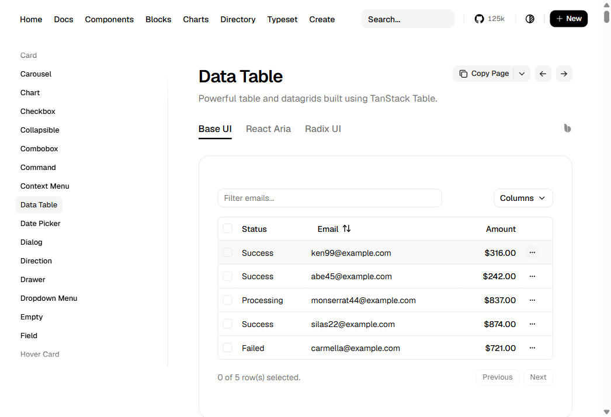
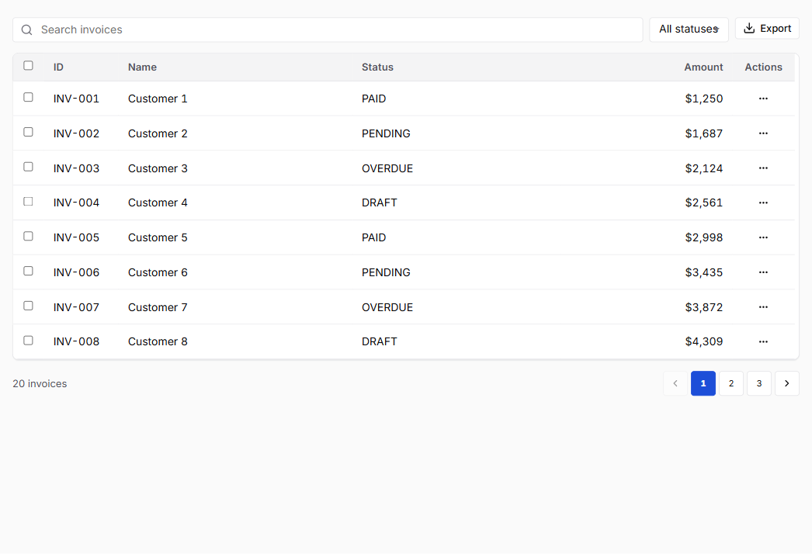
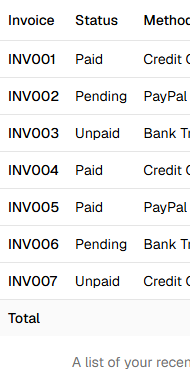
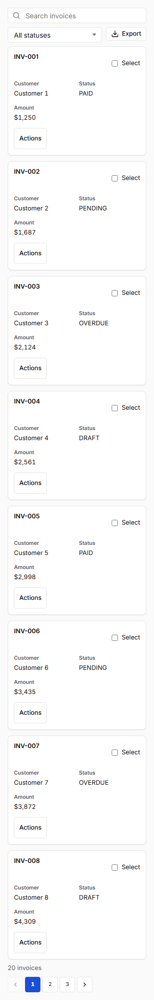

Matched viewport: 1046×714 CSS pixels. Reference: shadcn Data Table. Local: Strata's Accounts Receivable invoice workbench Storybook example.


The local Storybook workbench was rechecked at 1280×720 CSS pixels after density inheritance was corrected. The selected root density now reaches DataTable when its density prop is omitted.
| Theme | Ultra-compact | Compact | Standard | Comfortable |
|---|---|---|---|---|
| Strata | 26.3px | 33.0px | 44.8px | 52.8px |
| Strata dark | 26.3px | 33.0px | 44.8px | 52.8px |
| Strata high contrast | 27.1px | 33.8px | 45.6px | 53.6px |
These row heights are from the earlier scroll-only 1280px matrix and remain historical evidence. Fresh 1280px and 320px captures after the optional mobile alternative are recorded in the current matrix packet. RTL, actual browser zoom, and OS-mode coverage remain open. See the iteration evidence report for exact gates and remaining work.
The live shadcn Base Table keeps a 327px table in a 190px horizontal scroll viewport. Strata's optional Enterprise Workbench alternative presents the same synthetic invoice records as labeled cards with selection and row actions. SAP Fiori responsive-table guidance informed the label/value presentation. These patterns serve a similar line-item review task; they do not imply that every complex grid should use cards.


All 12 narrow theme/density samples show the local alternative with 320px document/body width and zero axe violations. All 12 desktop samples preserve the existing table. The full 24-case measurements, keyboard path and remaining limits are in the matrix evidence.